ストレージフォルダの共有とアクセス制御#
ストレージフォルダの内容を他のユーザーやプロジェクトメンバーと共有して共同作業を行う必要があるかもしれません。この目的のために、Backend.AIは柔軟なフォルダ共有機能を提供します。
他のユーザーとストレージフォルダを共有する#
個人のストレージフォルダを他のユーザーと共有する方法を学びましょう。まず、ユーザーAのアカウントにログインし、データページに移動します。いくつかのフォルダがあり、testsというフォルダをユーザーBに共有したいとします。
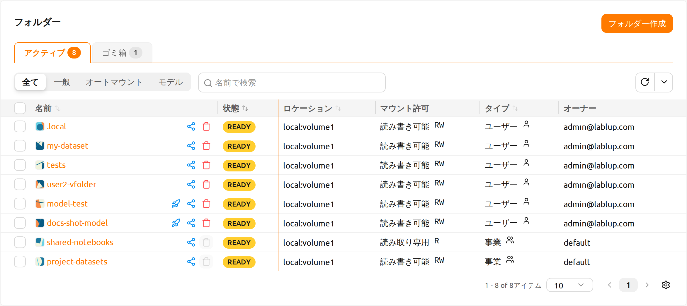
testsフォルダ内にはhello.txtやmyfolderなどのファイルやディレクトリがあります。
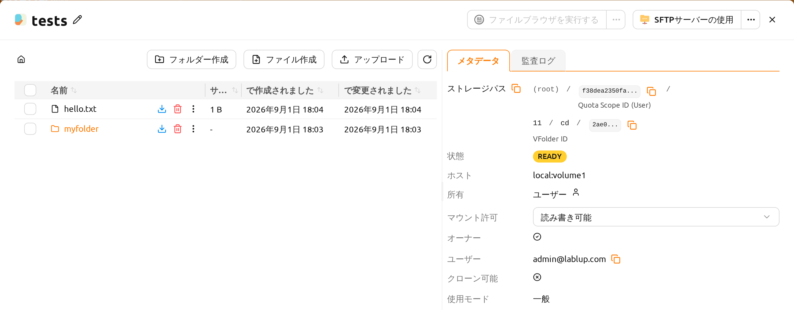
ユーザーBのアカウントにログインした際、testsフォルダがリストに表示されないことを確認します。
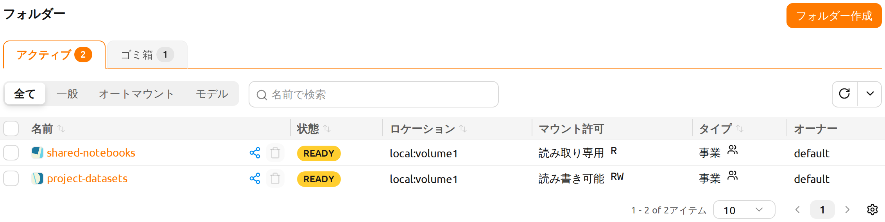
ユーザーBのアカウントにtestsという名前のフォルダが既に存在する場合、ユーザーAのtestsフォルダをユーザーBと共有することはできません。
ユーザーAのアカウントに戻り、リストのtestsフォルダ名の横にある共有ボタンをクリックします。
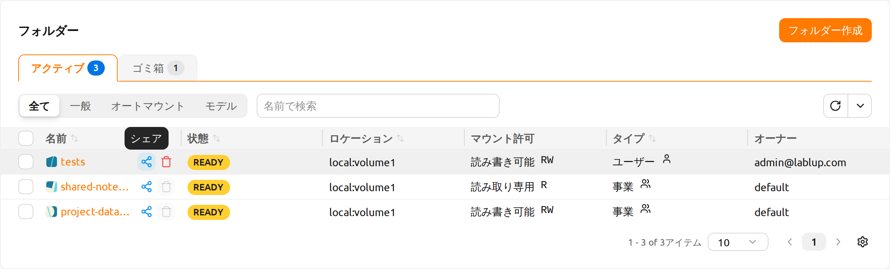
フォルダの共有モーダルが開きます。ユーザーを招待しますセクションでユーザーBのメールアドレスを入力し、権限ドロップダウンから希望する権限レベルを選択します。読み取り専用を選択すると、ユーザーBはフォルダを閲覧できますが変更はできません。読み書き可能を選択すると、ユーザーBはフォルダの閲覧と変更の両方が可能になります。追加ボタンをクリックして招待を送信します。
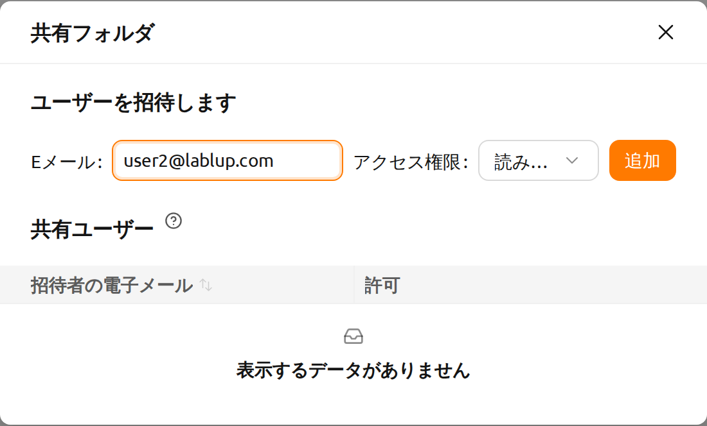
ユーザーBのアカウントに切り替え、データページに移動します。応答待ちの招待がある場合、フォルダリスト上部の右側に保留中の招待リンクが表示され、保留中の招待の件数が表示されます。
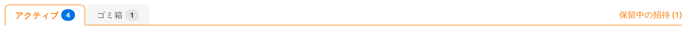
リンクをクリックすると招待されたフォルダーモーダルが開き、保留中のフォルダ招待を承諾または辞退できます。
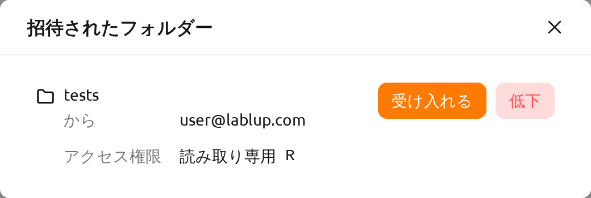
データページに移動し、testsフォルダがリストに表示されていることを確認します。リストに表示されない場合は、ブラウザページを更新してみてください。招待を承諾したので、ユーザーBのアカウントでユーザーAのtestsフォルダの内容を確認できるようになりました。ユーザーBが作成したフォルダとは異なり、共有フォルダにはオーナー列にチェックアイコンが表示されません。また、マウント権限列に読み取り専用の表示が確認できます。
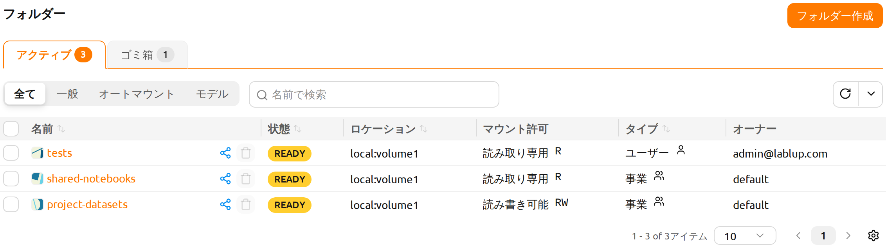
リストでtestsフォルダ名をクリックして、フォルダ内に移動しましょう。ユーザーAのアカウントで確認したhello.txtとmyfolderを再び確認できます。ユーザーAが読み取り専用で共有したため、フォルダーエクスプローラーでは書き込み系の操作が無効化されます。アップロード、フォルダー作成、消去の各ボタンと、項目名の隣にあるRenameボタンは使用できず、ユーザーBはフォルダの内容の閲覧とダウンロードのみ行えます。
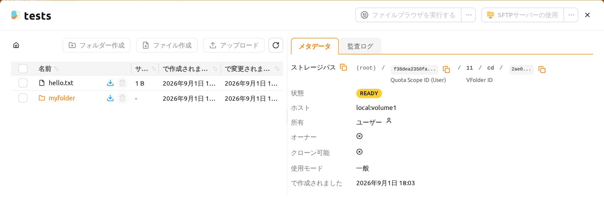
ユーザーBのアカウントでこのストレージフォルダをマウントしてコンピュートセッションを作成してみましょう。
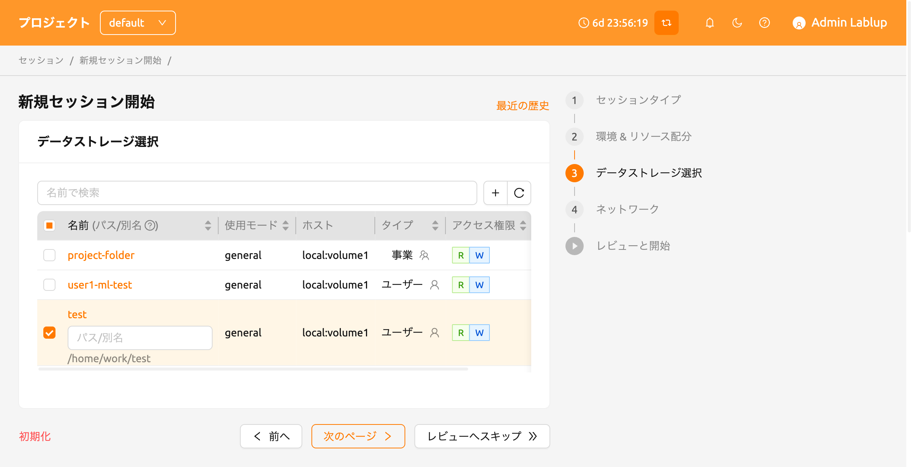
セッションを作成した後、ウェブターミナルを開き、testsフォルダがホームフォルダにマウントされていることを確認します。testsフォルダの内容は表示されますが、ファイルの作成や削除は許可されません。これは、ユーザーAが読み取り専用で共有したためです。書き込みアクセスを含む形で共有されている場合、ユーザーBはtestsフォルダ内にファイルを作成できます。
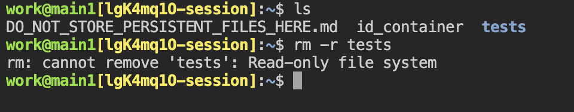
この方法で、Backend.AIのメールアカウントに基づいて他のユーザーと個人のストレージフォルダを共有することができます。
Backend.AIはプロジェクトメンバーへのプロジェクトフォルダの共有機能も提供しています。 詳細については、プロジェクトメンバーとプロジェクトストレージフォルダを共有するを参照してください。
共有フォルダの権限を調整する#
フォルダの共有モーダルから共有ユーザーの権限を変更できます。共有ユーザーセクションには、招待を承諾したすべてのユーザーがテーブルで表示されます。各行には招待されたユーザーのメールアドレスと権限ドロップダウンが表示されます。ユーザーの行の権限ドロップダウンをクリックして、アクセスレベルを変更します。
- 読み取り専用: 招待されたユーザーはフォルダへの読み取り専用アクセス権を持ちます。
- 読み書き可能: 招待されたユーザーはフォルダへの読み書き権限を持ち、フォルダ内のファイルやフォルダの作成・変更・削除を行えます。
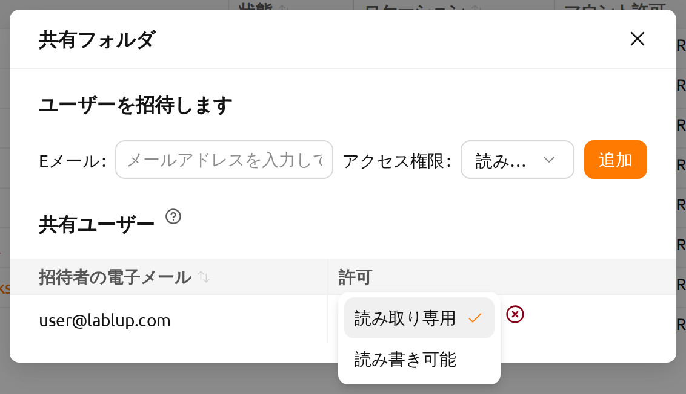
読み書き可能権限が付与されている場合でも、フォルダ自体の名前変更は所有者のみが行えます。読み書き可能権限にはフォルダの名前変更機能は含まれません。
フォルダの共有を停止する#
招待者としてフォルダの共有を停止するには、フォルダリストで該当フォルダ名の横にある共有ボタンをクリックして、フォルダの共有モーダルを開きます。共有ユーザーテーブルで、アクセスを取り消すユーザーの行にある権限ドロップダウンの横の共有停止アイコン（赤い閉じる円）をクリックします。確認ダイアログが表示されたら、確認ボタンをクリックしてそのユーザーのアクセスを取り消します。
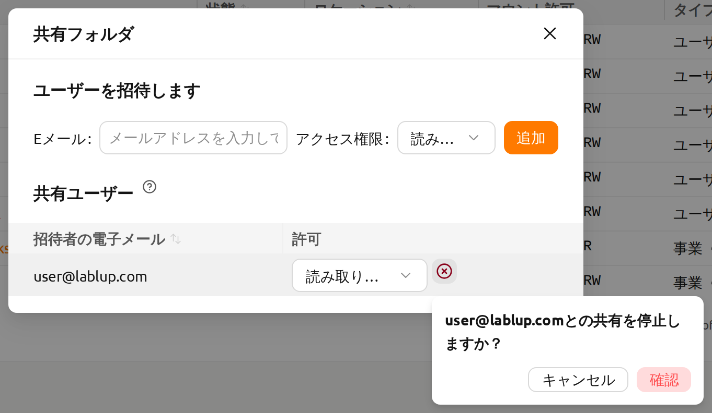
招待されたユーザーとして共有フォルダへのアクセスが不要になった場合は、フォルダリストで該当フォルダの共有ボタンをクリックして、共有フォルダ権限モーダルを開きます。権限テーブルの制御列にある退出アイコンをクリックして、共有フォルダから退出します。操作が完了する前に確認ダイアログが表示されます。
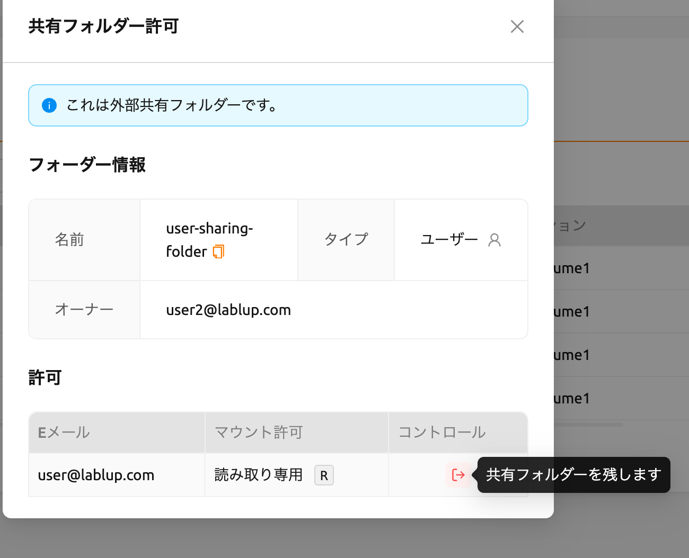